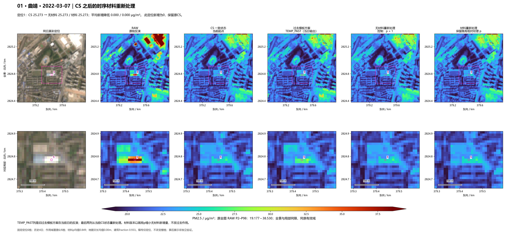
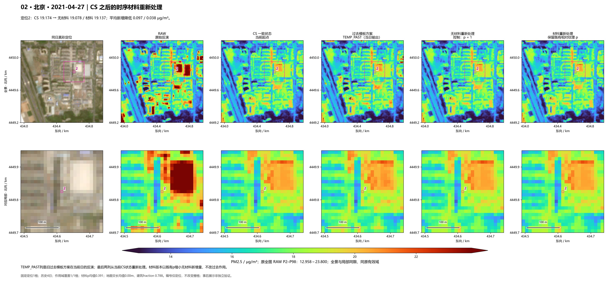
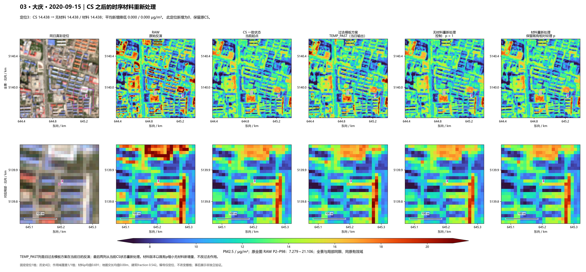
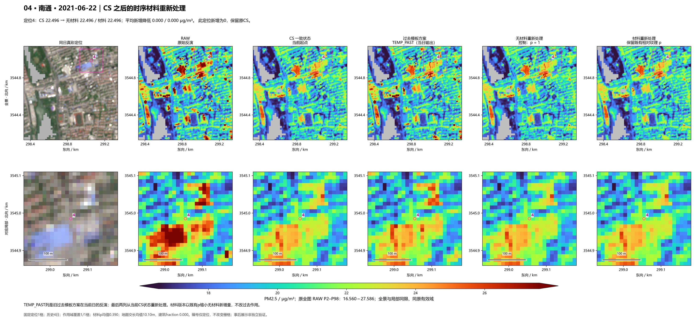
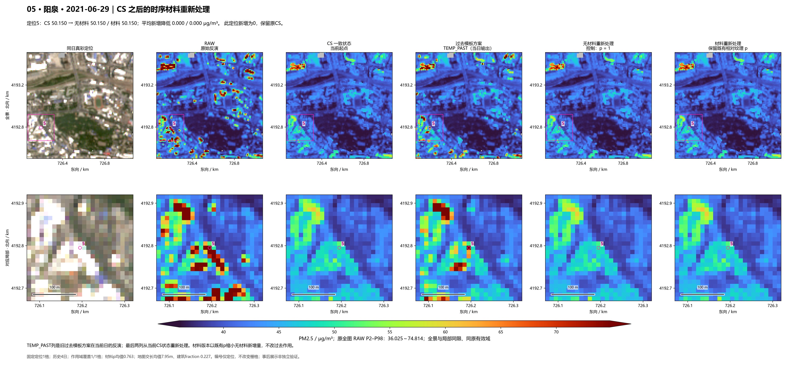
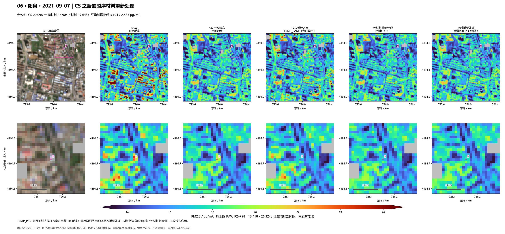
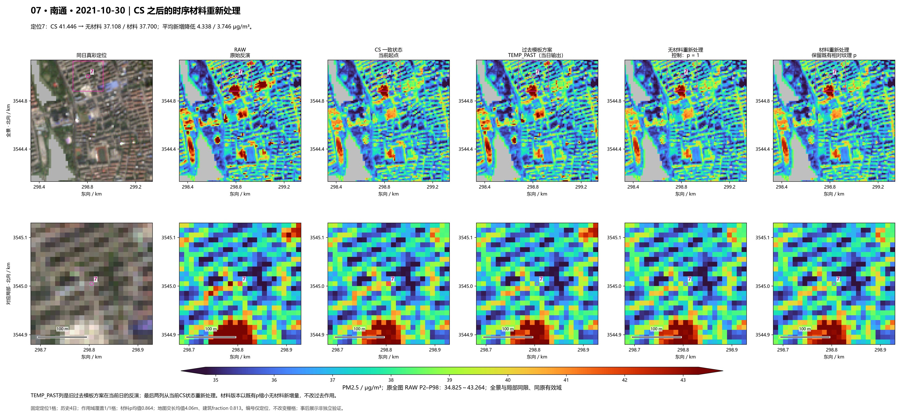
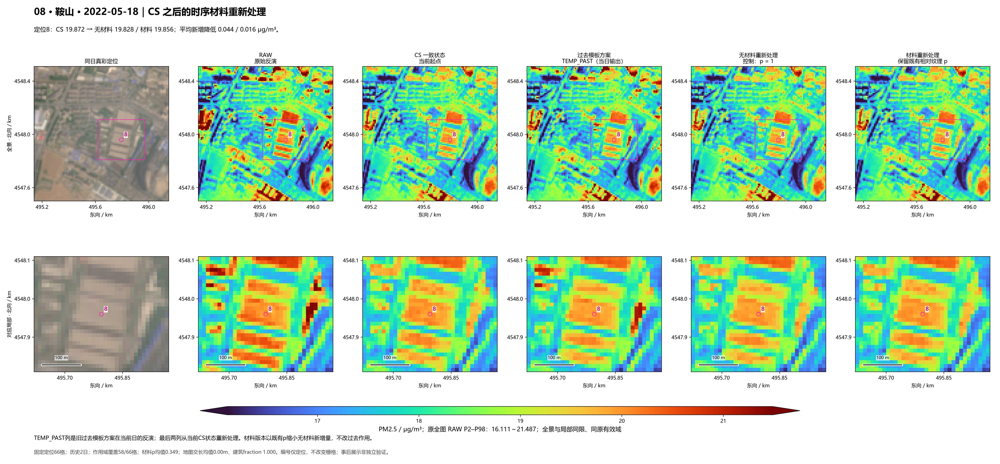

六列：真彩、RAW、当前CS、原TEMP_PAST当日输出、无材料重新处理、材料重新处理。每图上排全景、下排对应局部，全部读取已完成PM；本页没有新推理或拟合。
选图规则 · 实际定位与数值 · 生产区环境固定对象日期表
定位1：CS 25.273 → 无材料 25.273 / 材料 25.273；平均新增降低 0.000 / 0.000 μg/m³。 此定位新增为0，保留原CS。

下载300 dpi PNG · 打开JPEG预览 · 沿用前轮固定场/定位，不更换：沿用已锁R1六格；保留新增为零的关键参照
定位2：CS 19.174 → 无材料 19.078 / 材料 19.137；平均新增降低 0.097 / 0.038 μg/m³。

下载300 dpi PNG · 打开JPEG预览 · 沿用前轮固定场/定位，不更换：原156场中NIR候选新增降低最大的输入小亮格；事后极值
定位3：CS 14.438 → 无材料 14.438 / 材料 14.438；平均新增降低 0.000 / 0.000 μg/m³。 此定位新增为0，保留原CS。

下载300 dpi PNG · 打开JPEG预览 · 沿用前轮固定场/定位，不更换：沿用已发布森林图建筑覆盖亮结构最大加强点；事后代表
定位4：CS 22.496 → 无材料 22.496 / 材料 22.496；平均新增降低 0.000 / 0.000 μg/m³。 此定位新增为0，保留原CS。

下载300 dpi PNG · 打开JPEG预览 · 沿用前轮固定场/定位，不更换：原156场中NIR候选弱纯道路交格最大代价；事后极值
定位5：CS 50.150 → 无材料 50.150 / 材料 50.150；平均新增降低 0.000 / 0.000 μg/m³。 此定位新增为0，保留原CS。

下载300 dpi PNG · 打开JPEG预览 · 沿用前轮固定场/定位，不更换：沿用CS新增量最大地图混合风险位置
定位6：CS 20.098 → 无材料 16.904 / 材料 17.645；平均新增降低 3.194 / 2.453 μg/m³。

下载300 dpi PNG · 打开JPEG预览 · 事后：原156场small bright平均新增降低最大（0.246021）；定位其中对象均值最大者
定位7：CS 41.446 → 无材料 37.108 / 材料 37.700；平均新增降低 4.338 / 3.746 μg/m³。

下载300 dpi PNG · 打开JPEG预览 · 事后：原156场地图交格最大新增降低（3.745782）；保留道路/混合代价
定位8：CS 19.872 → 无材料 19.828 / 材料 19.856；平均新增降低 0.044 / 0.016 μg/m³。

下载300 dpi PNG · 打开JPEG预览 · 事后：生产区环境AR02日期新增量跨度最大；2019-10-01→2022-05-18，降幅0.000000→0.016081，非污染事件验证